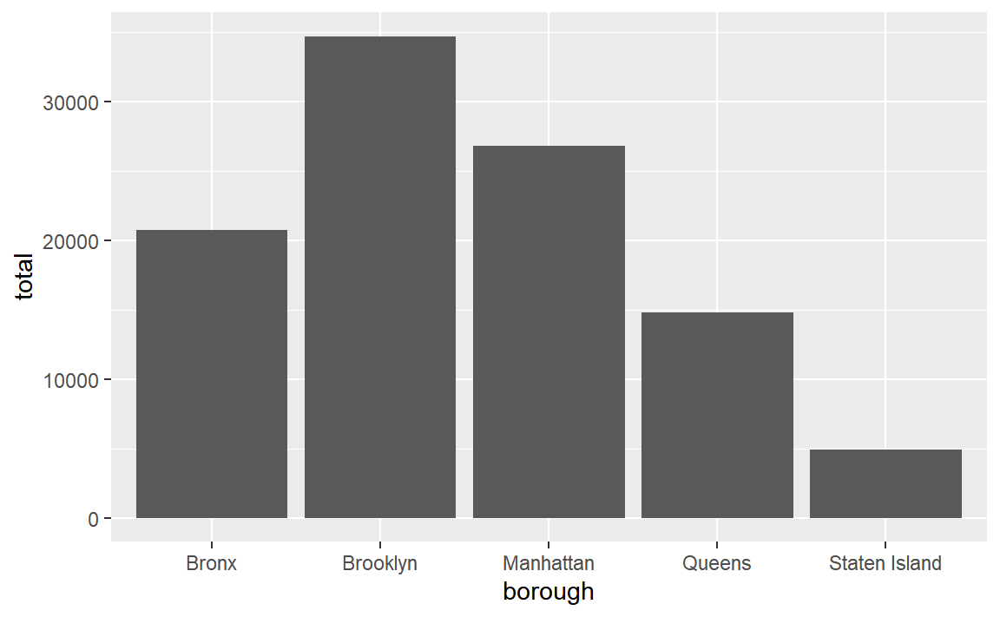
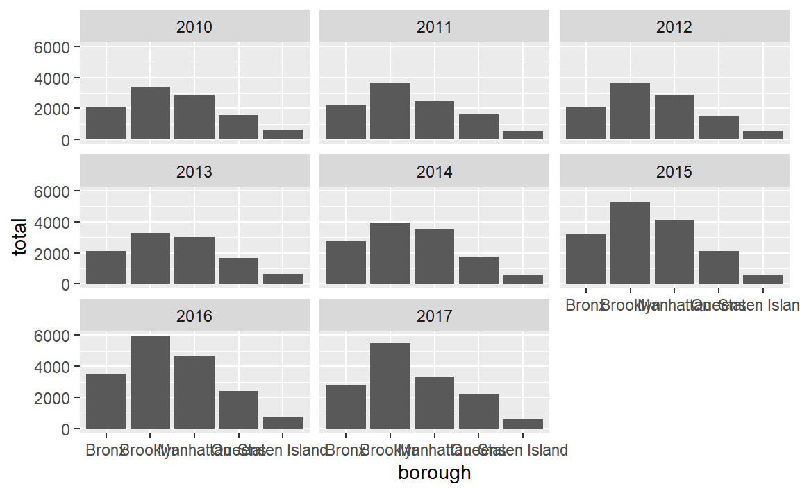
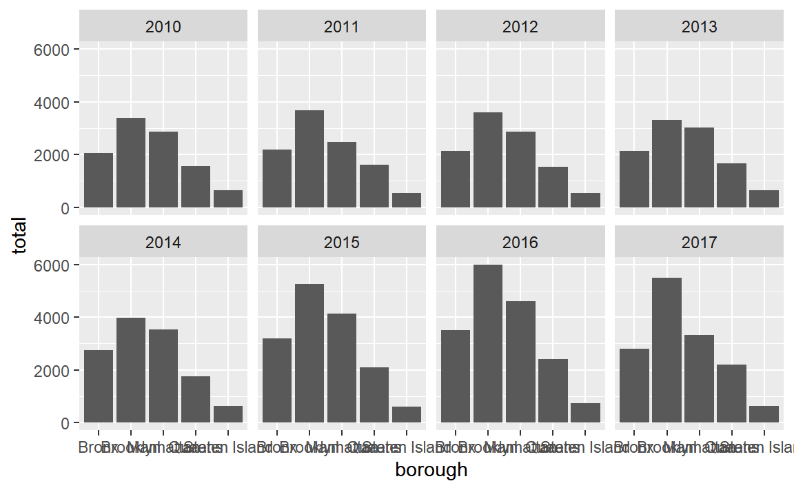
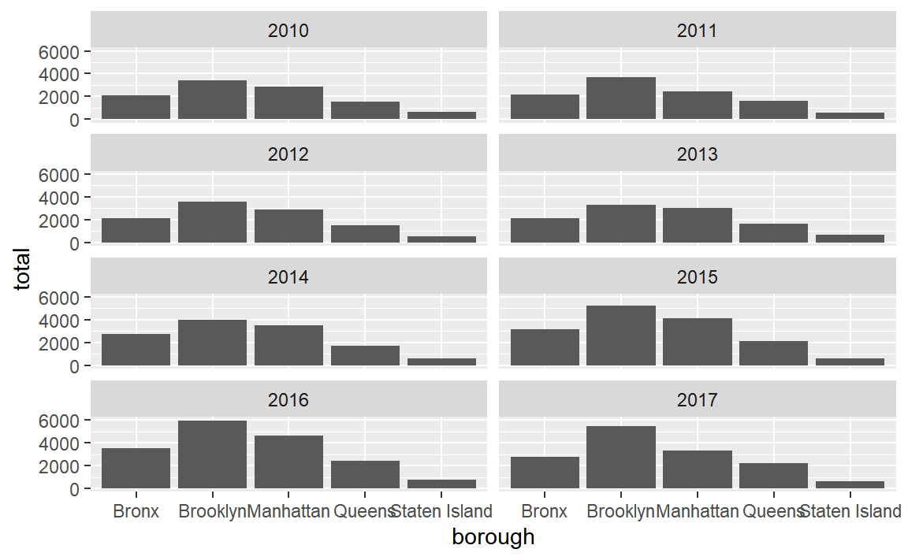
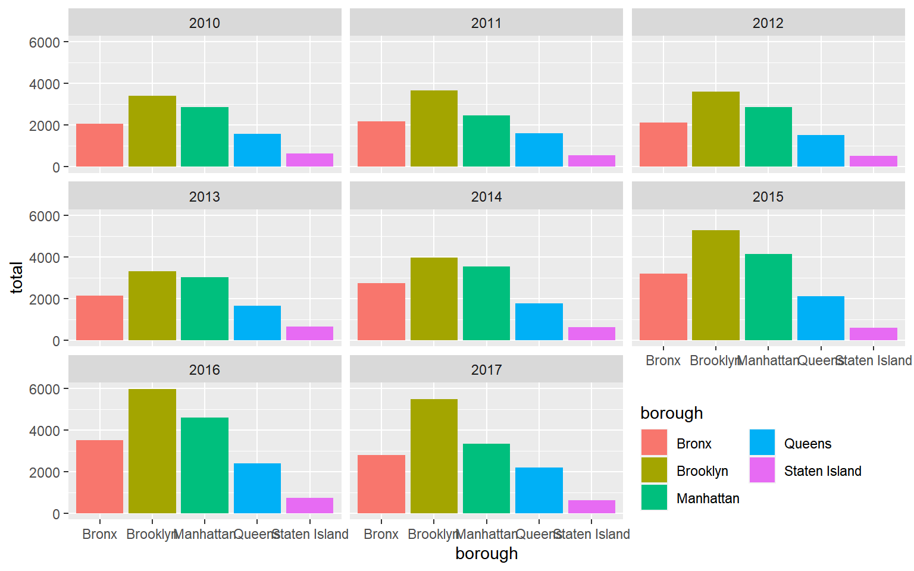
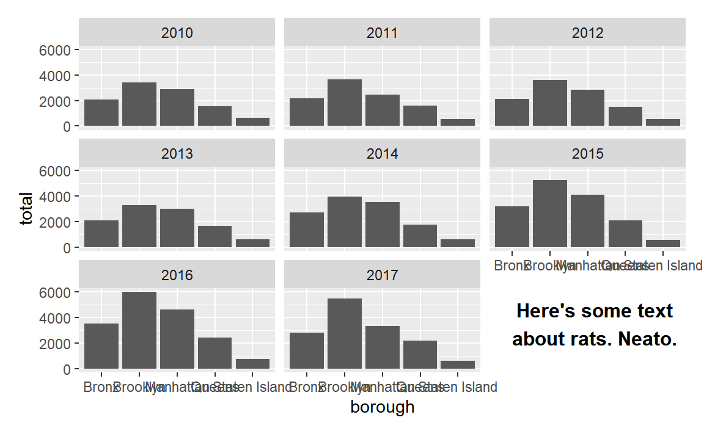
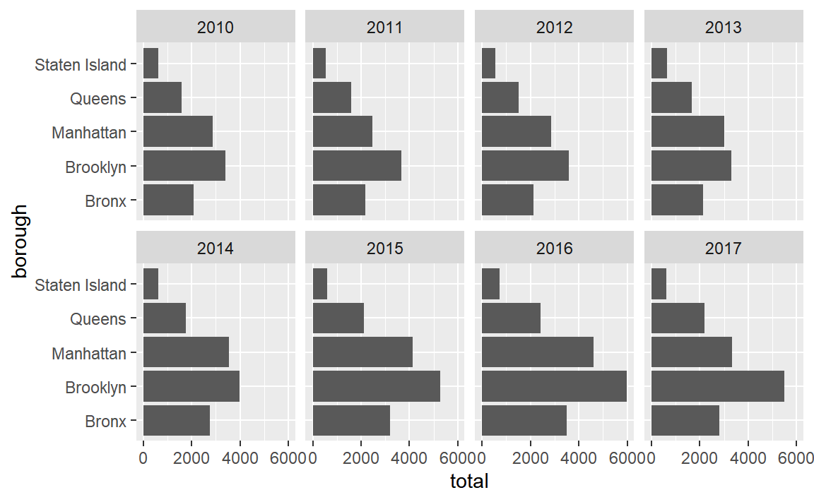
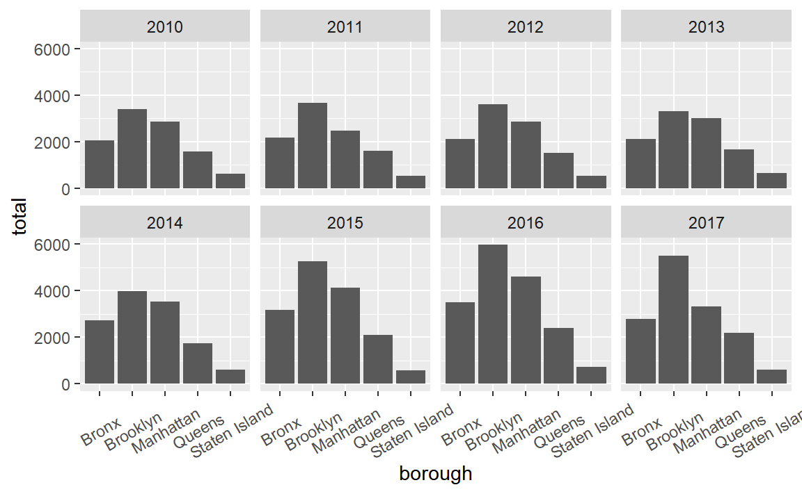
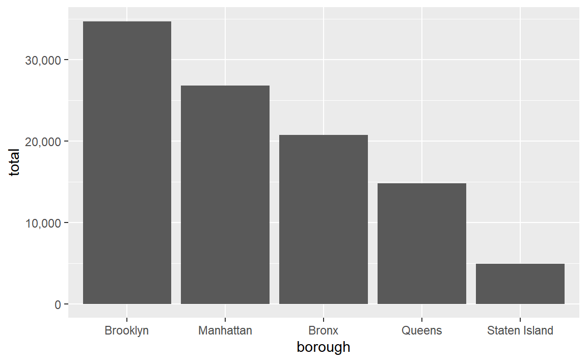

library(tidyverse)
rats_raw <- read_csv(
"https://datavizf23.classes.andrewheiss.com/files/data/external_data/Rat_Sightings.csv",
na = c("", "NA", "N/A")
)
rats_clean <- rats_raw %>%
rename(created_date = `Created Date`,
location_type = `Location Type`,
borough = Borough) %>%
mutate(created_date = mdy_hms(created_date)) %>%
mutate(sighting_year = year(created_date),
sighting_month = month(created_date),
sighting_day = day(created_date),
sighting_weekday = wday(created_date, label = TRUE, abbr = FALSE)) %>%
filter(borough != "Unspecified")Mini project 1 feedback
faq
feedback
Hi everyone!
Great work with your first mini projects! You successfully took real world data, cleaned it up, made a plot with it, and told a story about rats in New York!
I left some similar comments for a lot of you, so I figured I’d compile those here along with examples of how to address them.
First, I’ll load and clean the data so I can illustrate stuff below:
Warnings and messages
Your knitted document has warnings and package loading messages.
You should turn off those warnings and messages. See this and this for more about how.
ALL CAPS
Consider converting the borough names to NOT ALL CAPS, since you don’t repeat all caps anywhere else
In the data, the borough names are all spelled with ALL CAPS:
rats_clean %>%
select(created_date, borough)
## # A tibble: 101,913 × 2
## created_date borough
## <dttm> <chr>
## 1 2015-09-04 00:00:00 MANHATTAN
## 2 2015-09-04 00:00:00 STATEN ISLAND
## 3 2015-09-04 00:00:00 STATEN ISLAND
## 4 2015-09-04 00:00:00 BROOKLYN
## 5 2015-09-04 00:00:00 BRONX
## 6 2015-09-04 00:00:00 BROOKLYN
## 7 2015-09-04 00:00:00 QUEENS
## 8 2015-09-04 00:00:00 BROOKLYN
## 9 2015-09-04 00:00:00 MANHATTAN
## 10 2015-09-04 00:00:00 STATEN ISLAND
## # ℹ 101,903 more rowsYou can convert that to not all caps with one of two functions from the {stringr} package (which is one of the nine that R loads when you run library(tidyverse)): str_to_title() changes text to title case (where each word is capitalized) while str_to_sentence() changes text to sentence case (where the first letter in a sentence is capitalized):
str_to_title("OH NO! RATS IN NEW YORK")
## [1] "Oh No! Rats In New York"
str_to_sentence("OH NO! RATS IN NEW YORK")
## [1] "Oh no! Rats in new york"You can use it with mutate():
rats_clean <- rats_clean %>%
mutate(borough = str_to_title(borough))
rats_clean %>%
select(created_date, borough)
## # A tibble: 101,913 × 2
## created_date borough
## <dttm> <chr>
## 1 2015-09-04 00:00:00 Manhattan
## 2 2015-09-04 00:00:00 Staten Island
## 3 2015-09-04 00:00:00 Staten Island
## 4 2015-09-04 00:00:00 Brooklyn
## 5 2015-09-04 00:00:00 Bronx
## 6 2015-09-04 00:00:00 Brooklyn
## 7 2015-09-04 00:00:00 Queens
## 8 2015-09-04 00:00:00 Brooklyn
## 9 2015-09-04 00:00:00 Manhattan
## 10 2015-09-04 00:00:00 Staten Island
## # ℹ 101,903 more rows(I’d use str_to_title() here since Staten Island is two words; if you use str_to_sentence() it’ll turn into “Staten island”.)
Now your plots will have nicer borough names:
rats_summarized <- rats_clean %>%
group_by(borough) %>%
summarize(total = n())
ggplot(rats_summarized, aes(x = borough, y = total)) +
geom_col()
Sorting and ordering
Consider sorting the locations by number of sightings instead of alphabetically
In the plot above, the boroughs on the x-axis are in alphabetic order. If we want to tell a better story, though, it’s helpful to reorder them so that we can more easily see which boroughs have the most and least rats. See here for more about reordering categories. We can sort the data and then use fct_inorder() from the {forcats} package (also one of the nine that gets loaded with library(tidyverse)) to lock these borough names in the right order:
rats_summarized <- rats_clean %>%
group_by(borough) %>%
summarize(total = n()) %>%
# Sort by total in descending order
arrange(desc(total)) %>%
# Lock bhe borough names in place
mutate(borough = fct_inorder(borough))
ggplot(rats_summarized, aes(x = borough, y = total)) +
geom_col()Unbalanced facets
The facets are a little unbalanced given that there are 8 panels. Consider adding… something?… to that empty panel, like explanatory text or information about the data source. Or make it use 4 columns and 2 rows, or 2 columns and 4 rows so there’s no empty space
Lots of you used facets to show trends over time. By default R tries to make the grid as square as possible, so here there are 3 rows and 3 columns, but that leaves an empty panel in the bottom right corner.
rats_by_year <- rats_clean %>%
group_by(borough, sighting_year) %>%
summarize(total = n())
## `summarise()` has grouped output by 'borough'. You can override using the
## `.groups` argument.
ggplot(rats_by_year, aes(x = borough, y = total)) +
geom_col() +
facet_wrap(vars(sighting_year))
For the sake of balance, you can get rid of that panel by changing the layout. There are 8 panels here, so we could make a rectangle that’s 4 wide and 2 tall (or 2 wide and 4 tall if you want a tall rectangle instead) using the nrow or ncol arguments to facet_wrap():
ggplot(rats_by_year, aes(x = borough, y = total)) +
geom_col() +
facet_wrap(vars(sighting_year), ncol = 4)
ggplot(rats_by_year, aes(x = borough, y = total)) +
geom_col() +
facet_wrap(vars(sighting_year), nrow = 4)
Alternatively you can stick something in that empty panel like your legend (though in this example it’s better to not even have a legend because it’s redundant with the x-axis). The reposition_legend() function from the {lemon} package makes this really easy:
library(lemon)
p <- ggplot(rats_by_year, aes(x = borough, y = total, fill = borough)) +
geom_col() +
facet_wrap(vars(sighting_year)) +
guides(fill = guide_legend(ncol = 2, title.position = "top"))
reposition_legend(p, position = "bottom left", panel = "panel-3-3")
You can even be fancy and add some explanatory text to that corner. It takes a big of extra work—you essentially have to create a fake text-only plot using grid::textGrob() and then use inset_element() from the {patchwork} to place it on top of the main plot:
library(grid) # For making custom grid grobs
library(patchwork)
## Warning: package 'patchwork' was built under R version 4.2.3
# Make a little text-only plot
extra_note <- textGrob("Here's some text\nabout rats. Neato.",
gp = gpar(fontface = "bold"))
# Run this if you want to see it by itself:
# grid.draw(extra_note)
p <- ggplot(rats_by_year, aes(x = borough, y = total)) +
geom_col() +
facet_wrap(vars(sighting_year))
# Add the text-only plot as an inset plot with patchwork
p + inset_element(extra_note, left = 0.7, bottom = 0.0, right = 1, top = 0.3)
Overlapping text
The labels along the x-axis are unreadable and overlapping.
There are lots of ways to fix this—see this whole blog post for some different options. Here are some quick examples (none of these are fabulous, but they’re a start):
ggplot(rats_by_year, aes(x = total, y = borough)) +
geom_col() +
facet_wrap(vars(sighting_year), ncol = 4)
ggplot(rats_by_year, aes(x = borough, y = total)) +
geom_col() +
facet_wrap(vars(sighting_year), ncol = 4) +
theme(axis.text.x = element_text(angle = 30, hjust = 0.5, vjust = 0.5))
ggplot(rats_by_year, aes(x = borough, y = total)) +
geom_col() +
facet_wrap(vars(sighting_year), ncol = 4) +
scale_x_discrete(guide = guide_axis(n.dodge = 3))Commas
Consider adding automatic commas to the x-axis by including
library(scales)and addingscale_x_continuous(labels = label_comma())
You can make nicer labels by formatting them with label_comma() (or any of the other label_*() functions) from the {scales} package. See here for a lot more details.
library(scales)
ggplot(rats_summarized, aes(x = borough, y = total)) +
geom_col() +
scale_y_continuous(labels = label_comma())